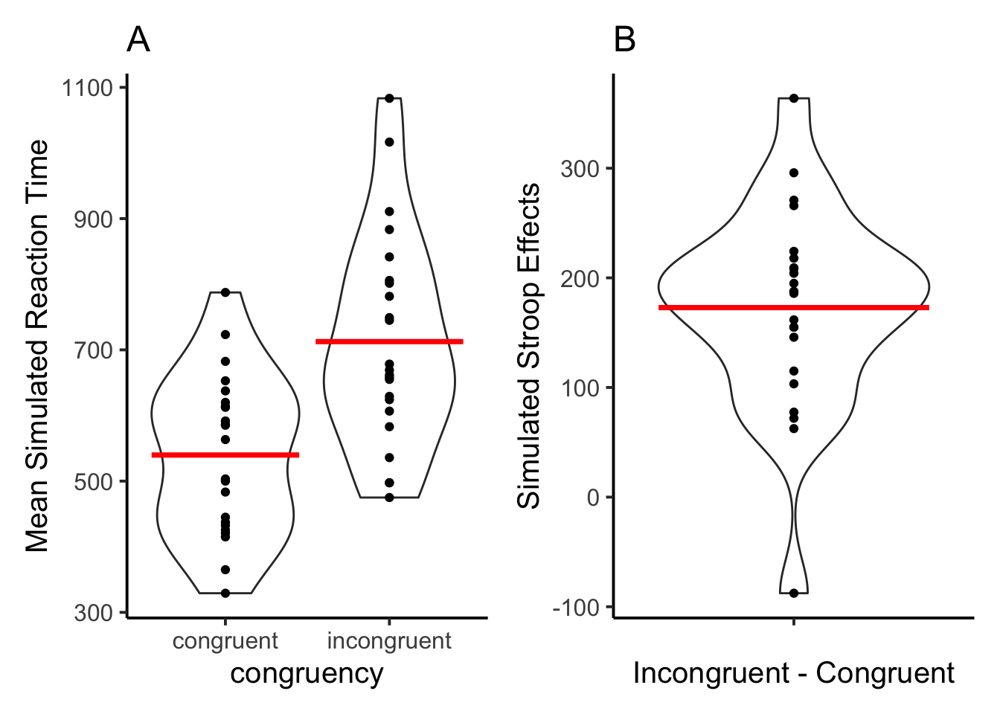
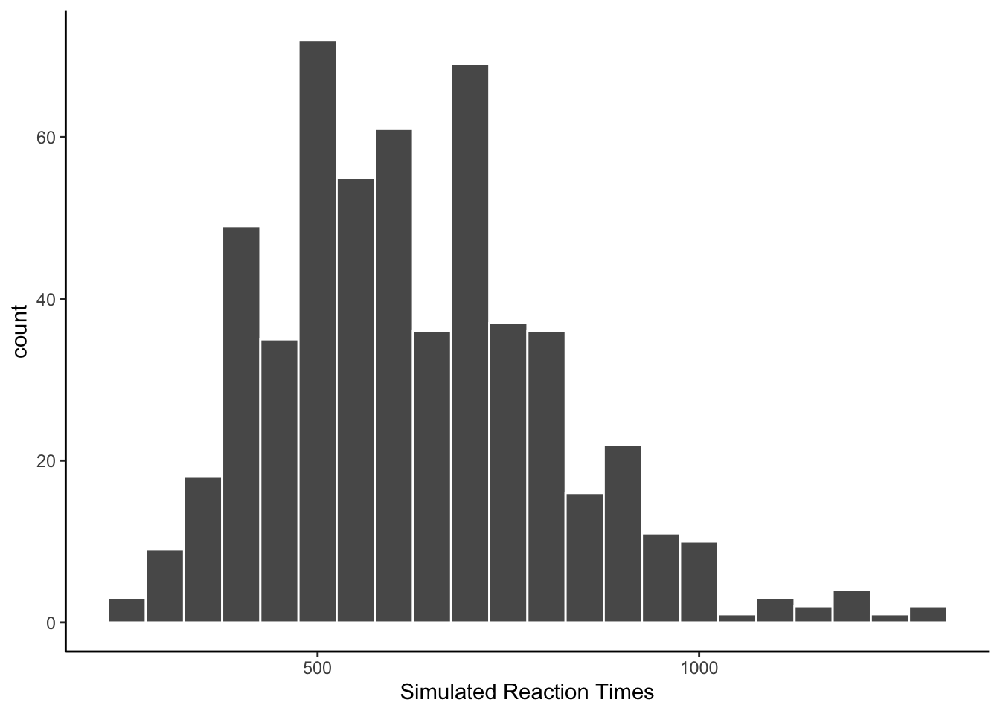
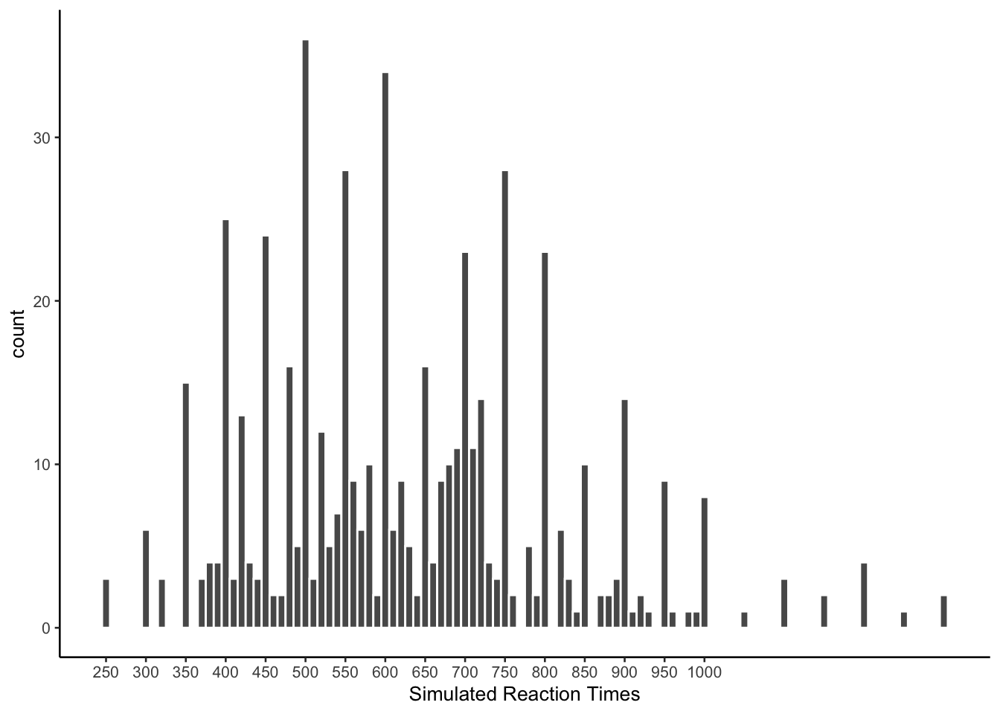
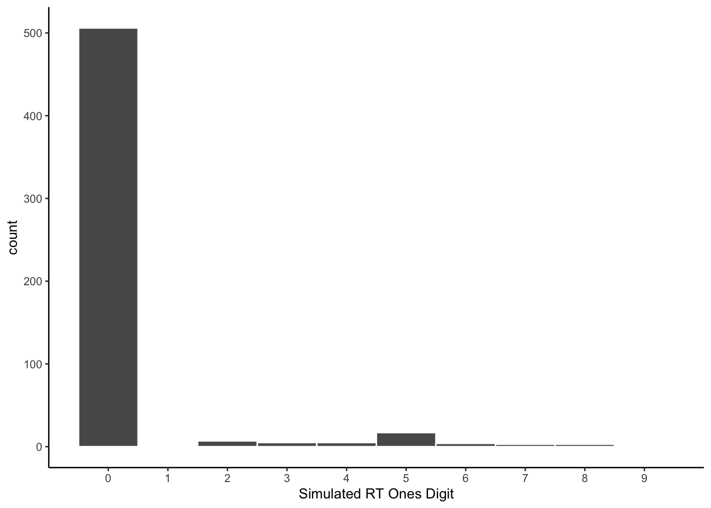
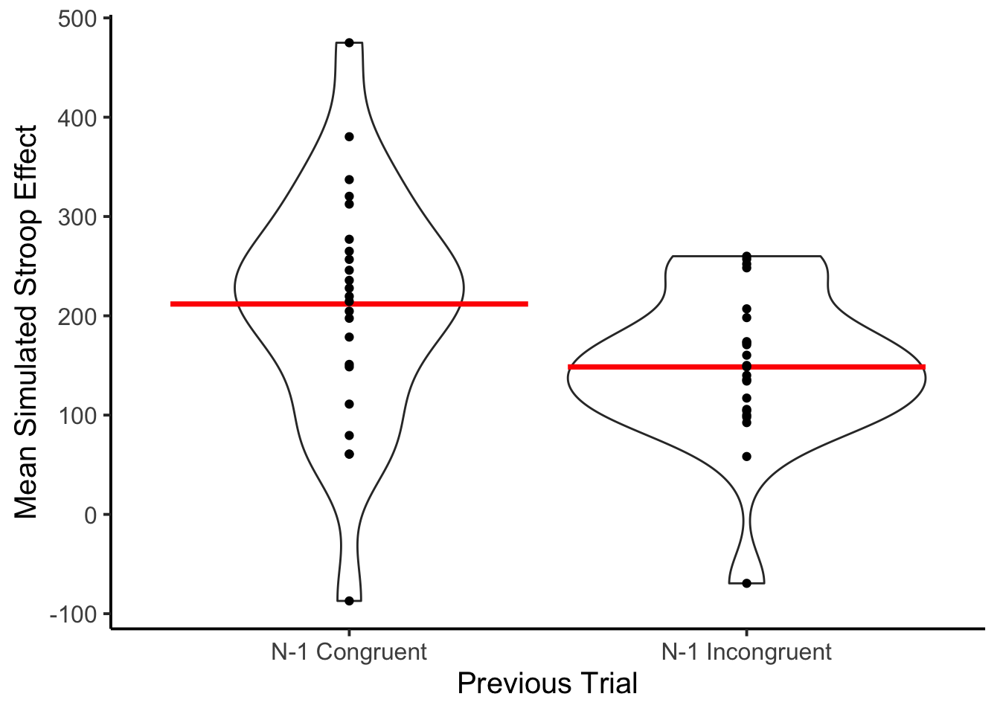

Show the code
library(tidyverse)
library(openai)
library(patchwork)
library(xtable)Matthew J. C. Crump ![]()
The goal of simulation 1 is to determine whether or not gpt-3.5-turbo is capable of simulating performance in a standard Stroop task. To accomplish this, the model will be given a text-based Stroop task where it will be shown a word presented in a particular color. On each trial, the model will be instructed to respond as quickly and accurately as possible to identify the color. The response will include the name of the color and a simulated reaction time in milliseconds. To facilitate easy analysis in R, the model is instructed to return results in JSON format.
library(tidyverse)
library(openai)
library(patchwork)
library(xtable)Notes: 25 simulated subjects. 24 Stroop trials each. 50% congruent/incongruent items made up from combinations of red, green, blue, and yellow. Each subject is given a different randomized order. Instructions are minimal: to identify the color as quickly and accurately as possible.
Takes about 10 minutes or so run, maybe less, didn’t time it.
Used default params for gpt-3.5-turbo from the openai library.
# use the colors red, green, blue, and yellow
# four possible congruent items
congruent_items <- c("The word red printed in the color red",
"The word blue printed in the color blue",
"The word yellow printed in the color yellow",
"The word green printed in the color green")
# four possible incongruent items
incongruent_items <- c("The word red printed in the color blue",
"The word red printed in the color green",
"The word red printed in the color yellow",
"The word blue printed in the color red",
"The word blue printed in the color green",
"The word blue printed in the color yellow",
"The word yellow printed in the color red",
"The word yellow printed in the color blue",
"The word yellow printed in the color green",
"The word green printed in the color red",
"The word green printed in the color blue",
"The word green printed in the color yellow")
# generate 50% congruent and 50% incongruent trials
# 12 each (congruent and incongruent)
trials <- sample(c(rep(congruent_items,3),incongruent_items))
#set up variables to store data
all_sim_data <- tibble()
gpt_response_list <- list()
# request multiple subjects
# submit a query to open ai using the following prompt
# note: responses in JSON format are requested
for(i in 1:25){
print(i)
gpt_response <- create_chat_completion(
model = "gpt-3.5-turbo",
messages = list(
list(
"role" = "system",
"content" = "You are a simulated participant in a human cognition experiment. Your task is to respond as quickly and accurately as possible, and record your simulated responses in a JSON file"),
list("role" = "assistant",
"content" = "OK, I am ready."),
list("role" = "user",
"content" = paste("Consider the following trials of a Stroop task where you are supposed to identify the ink-color of the word as quickly and accurately as possible.","-----", paste(1:24, trials, collapse="\n") , "-----",'This is a simulated Stroop task. You will be shown a Stroop item in the form of a sentence. The sentence will describe a word presented in a particular ink-color. Your task is to identify the ink-color of the word as quickly and accurately as possible. Put the simulated identification response and reaction time into a JSON array using this format: [{"trial": "trial number, integer", "word": "the name of the word, string","color": "the color of the word, string","response": "the simulated identification response, string","reaction_time": "the simulated reaction time, milliseconds an integer"}].', sep="\n")
)
)
)
# save the output from openai
gpt_response_list[[i]] <- gpt_response
# validate the JSON
test_JSON <- jsonlite::validate(gpt_response$choices$message.content)
# validation checks pass, write the simulated data to all_sim_data
if(test_JSON == TRUE){
sim_data <- jsonlite::fromJSON(gpt_response$choices$message.content)
if(sum(names(sim_data) == c("trial","word","color","response","reaction_time")) == 5) {
sim_data <- sim_data %>%
mutate(sim_subject = i)
all_sim_data <- rbind(all_sim_data,sim_data)
}
}
}
# model responses are in JSON format
save.image("data/simulation_1.RData")load(file = "data/simulation_1.RData")The LLM occasionally returns invalid JSON. The simulation ran 25 times, but still need to compute the total number of valid simulated subjects.
total_subjects <- length(unique(all_sim_data$sim_subject))There were 23 out of 25 valid simulated subjects.
# get mean RTs in each condition for each subject
rt_data_subject_congruency <- all_sim_data %>%
mutate(congruency = case_when(word == color ~ "congruent",
word != color ~ "incongruent")) %>%
mutate(accuracy = case_when(response == color ~ TRUE,
response != color ~ FALSE)) %>%
filter(accuracy == TRUE) %>%
group_by(congruency,sim_subject) %>%
summarize(mean_rt = mean(reaction_time), .groups = "drop")
# Compute difference scores for each subject
rt_data_subject_stroop <- rt_data_subject_congruency %>%
pivot_wider(names_from = congruency,
values_from = mean_rt) %>%
mutate(Stroop_effect = incongruent-congruent)
# make plots
F1A <- ggplot(rt_data_subject_congruency, aes(x = congruency,
y = mean_rt))+
geom_violin()+
stat_summary(fun = "mean",
geom = "crossbar",
color = "red")+
geom_point()+
theme_classic(base_size=15)+
ylab("Mean Simulated Reaction Time") +
ggtitle("A")
F1B <- ggplot(rt_data_subject_stroop, aes(x = ' ',
y = Stroop_effect))+
geom_violin()+
stat_summary(fun = "mean",
geom = "crossbar",
color = "red")+
geom_point()+
theme_classic(base_size=15)+
ylab("Simulated Stroop Effects")+
xlab("Incongruent - Congruent")+
ggtitle("B")
F1A + F1B
Figure 1A shows simulated mean reaction times for congruent and incongruent trials. Individual dots show means at the level of simulated subjects. Figure 1B shows the overall mean Stroop effect, and individual mean Stroop effects for each simulated subject. 22 of the 23 simulated subjects showed positive Stroop effects, and one simulated subject showed a reverse Stroop effect.
The major take home point is that the LLM is capable of generating data that have grossly similar characteristics to human reaction time data in the Stroop task. First, the model produces faster responses to congruent than incongruent trials. Second, the model generates data patterns stochastically, and individual simulated subjects showed different patterns of reaction time data. The range of reaction time values is not outside the range found in studies with human participants.
Human reaction time data is often distributed like a normal distribution with a long tail, also termed an ex-Gaussian distribution. Combining across all of the simulated subjects, what does the histogram of simulated RTs look like? At a group level, the reactions time look almost plausible.
ggplot(all_sim_data, aes(x=reaction_time))+
geom_histogram(binwidth=50, color="white")+
theme_classic()+
xlab("Simulated Reaction Times")
The next histogram changes the binwidth. The simulated RTs are not spaced equally within the distribution. Many of the numbers are too “round”, like 400, 450, 500, etc.
ggplot(all_sim_data, aes(x=reaction_time))+
geom_histogram(binwidth=10, color="white")+
scale_x_continuous(breaks=seq(250,1000,50))+
theme_classic(base_size = 10)+
xlab("Simulated Reaction Times")
The following histogram is a count of the ending digits for each of the simulated reaction times generated by gpt-3.5-turbo. A large majority of the values ended in zero, with five scoring a distance second. One question for future simulations is whether this behavior can be modified by changing the prompt to the model.
all_sim_data <- all_sim_data %>%
mutate(ending_digit = stringr::str_extract(all_sim_data$reaction_time, "\\d$")) %>%
mutate(ending_digit = as.numeric(ending_digit))
ggplot(all_sim_data, aes(x=ending_digit))+
geom_histogram(binwidth=1, color="white")+
scale_x_continuous(breaks=seq(0,9,1))+
theme_classic(base_size = 10)+
xlab("Simulated RT Ones Digit")
# report accuracy data
accuracy_data_subject <- all_sim_data %>%
mutate(congruency = case_when(word == color ~ "congruent",
word != color ~ "incongruent")) %>%
mutate(accuracy = case_when(response == color ~ TRUE,
response != color ~ FALSE)) %>%
group_by(congruency,sim_subject) %>%
summarize(proportion_correct = sum(accuracy)/12, .groups = "drop") %>%
ungroup() %>%
pivot_wider(names_from = congruency,
values_from = proportion_correct) %>%
mutate(Stroop_effect = incongruent-congruent)Every simulated subject scored 100% accurate on both congruent and incongruent trials.
A common finding in the Stroop literature is that Stroop effects are larger following congruent trials than incongruent trials. This information was not included in the prompt. The purpose of this analysis is to determine whether the LLM generates simulated RT data that also contain congruency sequence effects.
# add last trial congruency as a factor
all_sim_data <- all_sim_data %>%
mutate(congruency = case_when(word == color ~ "congruent",
word != color ~ "incongruent"))
all_sim_data$last_trial_congruent <- c(NA,all_sim_data$congruency[1:(dim(all_sim_data)[1]-1)])
all_sim_data <- all_sim_data %>%
mutate(last_trial_congruent = case_when(trial == 1 ~ NA,
trial != 1 ~ last_trial_congruent))
# report rt data
rt_data_subject_seq <- all_sim_data %>%
mutate(accuracy = case_when(response == color ~ TRUE,
response != color ~ FALSE)) %>%
filter(accuracy == TRUE,
is.na(last_trial_congruent) == FALSE) %>%
mutate(last_trial_congruent = paste0("n1",last_trial_congruent)) %>%
group_by(congruency,last_trial_congruent,sim_subject) %>%
summarize(mean_rt = mean(reaction_time), .groups = "drop") %>%
ungroup() %>%
pivot_wider(names_from = c(congruency,last_trial_congruent),
values_from = mean_rt) %>%
mutate(Previous_congruent = incongruent_n1congruent-congruent_n1congruent,
Previous_incongruent = incongruent_n1incongruent-congruent_n1incongruent
) %>%
pivot_longer(cols = c("Previous_congruent","Previous_incongruent"),
names_to = "Sequential") %>%
mutate(Sequential = as.factor(Sequential)) %>%
mutate(Sequential = recode(Sequential,
"Previous_congruent" = "N-1 Congruent",
"Previous_incongruent" = "N-1 Incongruent"
))
# make plots
ggplot(rt_data_subject_seq, aes(x = Sequential,
y = value))+
geom_violin()+
stat_summary(fun = "mean",
geom = "crossbar",
color = "red")+
geom_point()+
theme_classic(base_size=15)+
ylab("Mean Simulated Stroop Effect") +
xlab("Previous Trial")
# ANOVA
# ensure factors
rt_data_subject_seq <- rt_data_subject_seq %>%
mutate(sim_subject = factor(sim_subject))
# run ANOVA
aov_sequential <- aov(value ~ Sequential + Error(sim_subject/Sequential), data = rt_data_subject_seq)
# save printable summaries
apa_print <- papaja::apa_print(aov_sequential)
knitr::kable(xtable(summary(aov_sequential)))| Df | Sum Sq | Mean Sq | F value | Pr(>F) | |
|---|---|---|---|---|---|
| Residuals | 22 | 390332.87 | 17742.403 | NA | NA |
| Sequential | 1 | 46160.66 | 46160.657 | 20.52313 | 0.0001652 |
| Residuals | 22 | 49482.43 | 2249.201 | NA | NA |
Author’s note: Huh.
In this simulation of 23 subjects, the mean Stroop effect was larger for trials preceded by a congruent item compared to trials preceded by an incongruent item, \(F(1, 22) = 20.52\), \(p < .001\), \(\hat{\eta}^2_G = .095\), 90% CI \([.000, .316]\).
Gpt-3.5-turbo produced simulated data that approximated human behavior in several respects, including producing standard Stroop effects, and even a congruency sequence effect. The accuracy data was too perfect, and the reaction time data was too round (most numbers ended in zeros.)
General caveats. This code can be re-run, but the result is not completely reproducible because the LLM is stochastic and will return different answers each time.